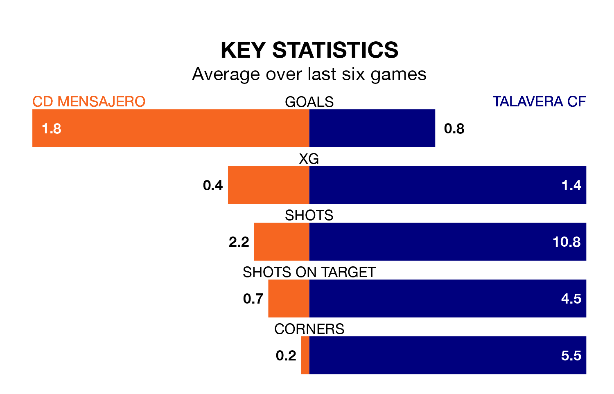

Mid-season relegation candidates CD Mensajero face a challenge against high-flying Talavera CF at the Estadio Silvestre Carrillo on Sunday.
CD Mensajero are rooted to the bottom of the Segunda División RFEF Group 5 table, and have picked up two wins and nine draws in their 19 games to date.
Talavera, meanwhile, are second in the standings with 33 points, having won nine and drawn six, and are one point behind table-toppers Atlético Paso.
With 22 goals in 19 games so far this season, Talavera are scoring more than average in the league with 1.2 goals per game. And they are conceding fewer than average, letting in 10 goals at a rate of 0.5 per game.
Mensajero, meanwhile, are average scorers, with 1.1 goals per game. They have conceded 1.6 goals per game.
The home side are in mixed form in Segunda División RFEF Group 5, with two wins and three draws from their last six games.
And also with two wins and three draws over that period, the visitors' form is identical – they have both taken nine points from 18.
Mensajero's last match was on January 21, a 2-2 draw against Ursaria.
Talavera beat Getafe B 3-0 last time out, also on Sunday.
Updated: 08:51 (UTC), 25/01/24